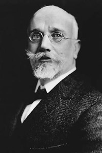

Eleftherios Venizelos (1864 - 1936)

Yunanlýlarýn ünlü siyaset ve devlet adamý olan Venizelos, Yunan politikasýný þekillendiren, bu devletin topraklarýnýn iki katýna çýkarýlmasýný saðlayanlarýn baþýnda gelir. Kurtuluþ Savaþýmýzýn konusu olan isimlerden biridir. Risale-i Nur'da, papaz gibi dinlerinde mutaassýp devlet adamlarýndan birisi olarak isminden söz edilmektedir.Venizelos, Girit Adasýnda bulunan Hanya ilinin bir köyünde doðdu (1864). Bu sýrada Osmanlý Devletine baðlý olan adada Rum isyanlarý sürmektedir. Bu isyanlardan dolayý sürgüne gönderilenlerden birisi olan babasýnýn cezasýndan dolayý, ilk eðitimini Syra Adasýnda yaptý. Eðitimine daha sonra Atina'da devam ederek, 1889 yýlýnda Adaya avukat olarak döndü ve Girit Yerel Meclisine seçildi.
Bu tarihten sonra Adadaki isyanlarýn önderliðini yapmaya baþlayan Venizelos, daha sonra Osmanlý-Yunan savaþýnýn (1897) çýkmasýna sebep olan ayaklanmalarý baþlattý. Bu savaþta Yunanlýlar maðlup olduklarý halde, zamanýn büyük devletlerinin müdahale ve desteðiyle Osmanlýlara baðlý özerk Girit yönetimi kuruldu. Ada Yüksek Komiserliðine Yunan kralýnýn oðlu Prens George atanýrken, özerk yönetimin Adalet Bakanlýðýna da Venizelos atandý. Savaþ sýrasýnda müdahale edip asker çýkaran Ýngiltere, Fransa, Rusya ve Ýtalya askerleri Adadan çekilmeyerek "barýþ gücü" olarak Adada kaldýlar (1898). Osmanlý kuvvetlerinin çekilmesiyle tamamen korumasýz kalan Müslüman halk, Adayý terk etmeye baþladý.
Yunan milliyetçilerinin büyük emeli olan ve tüm Yunanlýlarý, Yunanistan egemenliðinde tek bayrak altýnda toplama amacýný güden "Megalo Ýdea", Girit Adasýný da kapsamýna alýyordu. Büyük ideallerine ulaþmalarýnda Girit isyanlarý ve Venizelos, giderek önemli yer almaya baþladý. Venizelos'un çýkardýðý silahlý ayaklanma sonucu, Prens George görevinden istifa etmek zorunda kaldý (1906). Ýki yýl sonra Adanýn Yunanistan'a katýldýðýný ilan etti. Yunanistan'daki askeri ayaklanma sonucu bazý bakanlar görevden ayrýlmak zorunda kaldý. Bu arada kral tarafýndan meclisin daðýtýlmasý üzerine yeni seçimler yapýldý. Seçimleri büyük bir çoðunlukla Venizelos'un Liberal Partisi kazandý. Yýldýzý gittikçe parlayan Venizelos, 1911 yýlýnda baþbakan oldu.
Venizelos, yeni bir anayasa hazýrladý. Meclisteki milletvekili sayýsýný azalttý. Subaylara seçme ve seçilme yasaðý getirerek siyasete karýþmalarýný engelledi. Ülkesinin geliþmesi için çok önemli çalýþmalarý gerçekleþtirdi. Bu meyanda gelir vergisini yeniden düzenledi. Toprak reformunu gerçekleþtirdi. Eðitime aðýrlýk verdi. Ýþçi sendikalarýnýn kurulmasýna izin verdi. 1912 yýlýnda tekrar seçime girerek büyük bir zaferle çýktý.
Balkan Savaþlarý, Yunanistan'ýn emellerini gerçekleþtirmesi açýsýndan büyük bir imkan saðladý. Birinci ve Ýkinci Balkan savaþlarý sonrasýnda imzalanan Londra ve Bükreþ antlaþmalarýyla önemli topraklar elde etti. Birinci Dünya Savaþý baþladýktan sonra savaþa katýlma konusunda büyük bir kargaþa yaþandý. Ülkede ihtilal hareketleri baþladý. Venizelos Girit'e giderek ihtilalci askerlerin baþýna geçti ve ülkenin yaklaþýk yarýsýný savaþa soktu. Kral tahtýný oðlu Prens Aleksandr'a býrakmak zorunda kaldý. Bu deðiþiklikten sonra ülkenin en güçlüsü haline gelen Venizelos, Atina'ya geri döndü. Yunanistan Ýtilaf devletlerinin yanýnda yer aldý ve savaþ sonrasý yapýlan görüþmelerde yerini aldý. Konferanslarda Yunanistan açýsýndan önemli baþarýlar kazanýldý.
Ýzmir'in Ýtalyanlar yerine Yunanistan'a verilmesi sözünü alan Venizelos, Ýzmir'in iþgal edilmesi konusunda Ýtilaf devletlerinin desteðini aldýktan sonra þehri iþgal ettirdi (15 Mayýs 1919). Adadolu'yu iþgal macerasýný baþlatýp hezimete uðratmasýna raðmen, fatura krala kesildi ve II. Yorgi kral oldu. Venizelos tekrar baþkan olduysa da parlamentonun cumhuriyet ilan etmesi üzerine (1924) monarþi taraftarý olduðundan istifa etmek zorunda kaldý. Ülkede darbeler ve kargaþalar birbirini izledi. Ülkesinden bir süre ayrýldýktan sonra 1928'de geri döndü ve tekrar baþbakan oldu. Yugoslavya ve Türkiye ile dostluk antlaþmalarý yaptý. Ekim 1930'da ülkemize gelerek Ankara ve Ýstanbul'u ziyaret etti. Birkaç kez istifa etmek zorunda kaldýysa da 1933 yýlýna kadar baþbakanlýk yaptý. Cumhuriyetçilerle Kralcýlarýn mücadelesi devam etti. Venizelos, gýyaben idama mahkum edildiyse de !935 yýlýnda yapýlan referandumla krallýk idaresi, oylarýn yüzde 97'sini alarak tekrar kuruldu. Genel af ilaný arefesinde (1935) ülkesine dönen Venizelos, bir yýl sonra öldü.
Bediüzzaman, Asya'da baþlayan milliyetçilik akýmlarýnýn, Avrupa'yý her yönüyle hatta mukaddesatýný terk ederek taklit etme yanlýþlýðýný tahlil ettiði meselede; Asya ve Avrupa arasýndaki fark ile Ýslam ve Hýristiyanlýk arasýndaki farklarý izah eder. Her milletin kendine özgü özelliklerinin olduðunu, bir libasýn her þahsa uymayacaðýný, körü körüne taklidin maskaralýðý netice vereceðini belirttikten sonra üç noktaya iþaret eder.
Birincisi; Avrupa ve Asya'nýn dayandýklarý sosyal, iktisadi ve fikri temelleri farklýdýr. Avrupa'da iþletmecilik, Asya'da tarýmcýlýk hakimdir. Avrupa'yý dükkana, Asya'yý mezraa ve camiye benzetir. Dolayýsýyla iki taraf ayný vaziyeti alamaz. Avrupa'da felsefi akýmlar hakim iken, ekser enbiyanýn Asya'dan çýkmasýndan hareketle, Asya'nýn ilerlemesinin din ve kalbe baðlý olduðunu belirtir.
Ýkincisi; Ýslam dinini Hýristiyanlýk gibi görüp, Avrupa'da dine karþý lakaytlýðý savunmanýn büyük bir yanlýþ olduðunu belirtir. Avrupa'da dine karþý lakaytlýk olmakla beraber baþta bulunan idarecilerinin dinlerine sahip çýktýðýný ve mutaassýp olduklarýný kaydeder. Örneðin; Wilson, Loyd George, Venizelos gibi.
Üçüncüsü; Dine baðlanma ve taassup noktasýnda, iki dinin birbiriyle kýyaslanamayacaðý gerçeðidir. Çünkü, Avrupa'da dini taassup gerilemeyi beraberinde getirmiþtir. Üç asýr boyunca dahilde meydana gelen mezhep çatýþmalarý birçok insanýn ölümünü netice verdi. Din, müstebitlerin elinde halký ezme vasýtasý oldu. Dolayýsýyla çoðunluðun nazarýnda dine karþý küskünlük meydana geldi. Diðer taraftan, haçlý seferleri ve sonraki dönemlerde sair milletleri sömürgeleþtirme amacýna da alet edildi.
Ýslamiyet ise, dahilde savaþlara izin vermediði gibi, baðlandýkça ilerlemeyi netice verdi. Müslümanlar dinlerine sarýldýkça ilerlemeyi, lakayt kaldýkça gerilemeyi meydana getirdiler. Diðer yandan Ýslamiyet, zekatý farz kýlmasý ve faizi yasaklamasýyla toplumdaki sosyal adaleti tesis ederek, hem fakir insanlara yardým etmeyi saðladý hem de sýnýflar arasýnda büyük uçurumlarýn meydana gelmesini önledi. Bu nedenle Ýslamiyet'e karþý küsmenin hiçbir haklý gerekçesi yoktur (Mektubat, s. 312-313).
Venizelos'un adýnýn geçtiði diðer bir konu da Bediüzzaman'ýn Ýttihad ve Terakki'ye bakýþ açýsýyla ilgilidir. Ýttihad ve Terakki'nin iktidarda bulunduðu sýrada, muhalefet edilmesi gerekli konularda geri kalmayan Bediüzzaman, iktidarý kaybetmelerinden sonra yapýlan insafsýz eleþtirilere de karþý çýktý. Daha önce yaptýðý muhalefette amaç, onlara düþmanca yaklaþýp eleþtirmek deðil, doðru yolu bulmalarýna yardýmcý olmaktý. Ancak, düþmanlarýnýn onlara karþý þiddetli hücumu karþýsýnda, Ýttihatçýlarýn hak etmedikleri saldýrýlara karþý çýktý. Çünkü, yapýlan hücum artýk onlarýn iyi taraflarý olan azim ve sebatlarýna, Müslümanlarý koruma çabalarýna yönelmiþti. Onlara yapýlan saldýrý, düþmanýn hesabýna kazanç olarak geçmekte idi.
"Bence yol ikidir: mizanýn iki kefesi gibi. Birinin hiffeti, ötekinin sýkletine geçer. Ben tokadýmý Antranik ile beraber Enver'e, Venizelos ile beraber Said Halim'e vurmam. Nazarýmda vuran da sefildir." (Sünuhat, s. 67-68).